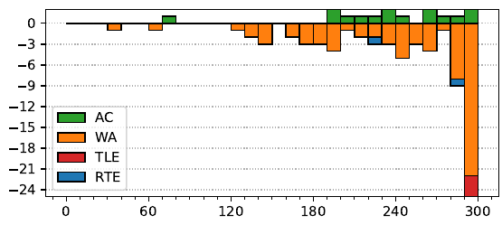

46th ICPC World Finals
Problem authors:
Jakub Onufry Wojtaszczyk and Derek Kisman
Solved by 15 teams.
First solved after 76 minutes.
Shortest team solution: 3475 bytes.
Shortest judge solution: 3163 bytes.

First, we may observe that all bridges can be removed from the graph without changing the result, as no cycle passes through them. This leaves us with several independent subproblems, one for each 2-edge-connected component.
Now we consider a component where every edge is a part of a cycle. If the component is a simple cycle, then the problem becomes checking cyclic equivalence of strings, which can be done using any linear-time string matching algorithm.
If the component has more than one cycle, then the answer is either “any permutation can be achieved” or “any even permutation can be achieved”. We omit most of the proof details here, but a general idea for proving such claims is to first find a way of making a single swap of any two labels, and then show that one can combine this swap with the given cycles to make arbitrary swaps, and thus arbitrary permutations. Similarly, for the even permutations, one first finds a way to make a single 3-cycle, then arbitrary 3-cycles, then arbitrary even permutations.
First, consider the case where there’s an edge that belongs to more than one cycle, or equivalently, where there are two vertices connected by three edge-disjoint paths. By rotating along the three cycles that can be formed by choosing any two of these paths, one can achieve any permutation of the labels in this subgraph, and one can also show that this allows achieving any permutation on the entire component.
If the component consists of multiple cycles which only share single vertices, then we can take two adjacent cycles, say a and b, and perform the permutation aba−1b−1, which results in a cycle of three of the labels. By the general strategy laid out above we can therefore make all even permutations. If at least one of the cycles has even length (and thus is an odd permutation), then it turns out we can also make all odd permutations. Otherwise, only even permutations are achievable.